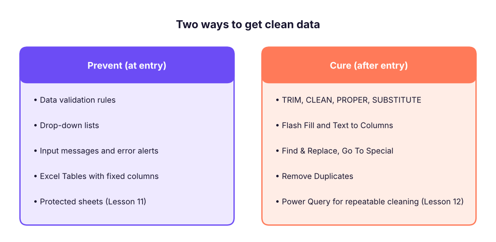
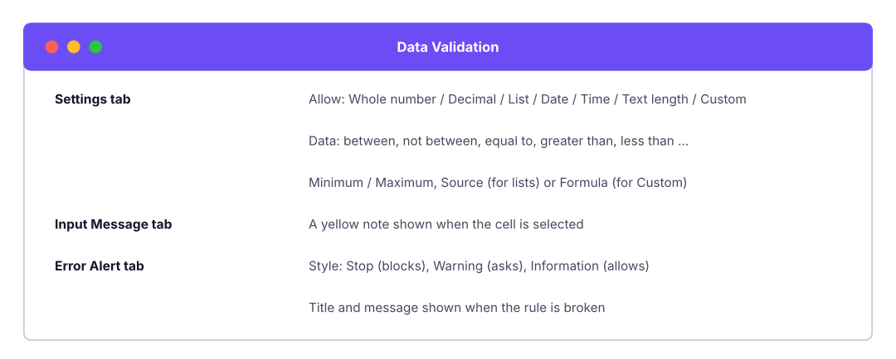

Stop bad data at the door with data validation and drop-down lists, then clean what already exists with Flash Fill, Text to Columns, Find & Replace, Go To Special, Remove Duplicates, Paste Special and Excel Tables.
● Live class 2✦ Excel for Microsoft 365, 2026Beginner⏱ 90 min
Most time in real analytics is not spent on fancy charts; it is spent fixing data: extra spaces, inconsistent spellings (Bangalore, Bengaluru, bengaluru), numbers stored as text, duplicates and blanks. Surveys of data teams regularly report that cleaning and preparing data takes well over half of an analyst's time.
There are two ways to win this fight:

Prevent problems at entry time, and clean whatever slips through. Both are needed.
Fast, consistent data entry
AutoFill and the fill handle
Select a cell and drag the small square at its bottom-right corner (the fill handle). Excel continues the pattern it recognises.
You type
Drag gives you
Jan
Feb, Mar, Apr …
Monday
Tuesday, Wednesday …
1, 2 (select both)
3, 4, 5 …
Q1
Q2, Q3, Q4, Q1 …
01-04-2026
02-04-2026, 03-04-2026 … (right-drag for months or years)
Item 1
Item 2, Item 3 …
=B2*12
=B3*12, =B4*12 …
Double-click the fill handle to fill a formula down as far as the column next to it has data. This is the fastest way to copy a formula to 10,000 rows.
TipCustom lists
File → Options → Advanced → Edit Custom Lists lets you add your own sequences, for example North, South, East, West or your company's department order. AutoFill and custom sort then follow that order.
Flash Fill (Ctrl + E)
Flash Fill learns a pattern from one or two examples you type. It is perfect for splitting names, extracting codes or reformatting text.
XFlash Fill: type the first answer in each column, then press Ctrl + E
A
B
C
D
E
1
Full name
Email
First name
Last name
Username
2
Kavya Iyer
kavya.iyer@abc.in
Kavya
Iyer
kiyer
3
Imran Reddy
imran.reddy@abc.in
Imran
Reddy
ireddy
4
Harpreet Kulkarni
harpreet.k@abc.in
Harpreet
Kulkarni
hkulkarni
5
Diya Iyer
diya.iyer@abc.in
Diya
Iyer
diyer
Purple cells are typed by you; green cells are filled by Flash Fill.
Watch outFlash Fill is not a formula
Flash Fill writes static values. If the source changes, the results do not update. Use formulas (Lesson 5) or Power Query (Lesson 12) when the data will be refreshed.
Data Validation: rules for what can be typed
Data → Data Validation (shortcut Alt, A, V, V) attaches a rule to cells. Anyone who types something that breaks the rule is stopped or warned.

The three tabs of the Data Validation dialog.
The validation types you will use most
Allow
Example rule
Business use
Whole number
between 18 and 65
Age of an employee
Decimal
between 0 and 0.5
Discount rate
List
Sales,Finance,IT,HR,Operations
Department drop-down
Date
between 01-04-2026 and 31-03-2027
Entries inside the financial year
Time
between 09:00 and 18:00
Office hours
Text length
equal to 6
PIN code, employee code
Custom
=COUNTIF($A$2:$A$500,A2)=1
No duplicate IDs
Building a drop-down list, step by step
Step by stepDepartment drop-down
On a sheet called Lists, type the allowed values in a column (Sales, Finance, IT, HR, Operations) and convert it to a Table (Ctrl + T) named tblDept. A Table grows automatically when you add a department.
Select the cells where people will enter a department (for example C2:C500).
Data → Data Validation → Allow: List.
Source: =INDIRECT("tblDept[Department]") or simply select the range =Lists!$A$2:$A$6.
Keep In-cell dropdown ticked. Add an Input Message ("Choose a department") and an Error Alert (Stop, "Please pick a department from the list").
XData entry sheet with validation rules (rules shown in row 2)
A
B
C
D
E
F
G
1
Emp ID
Name
Department
Age
Join date
Discount
PIN code
2
Text length = 4
Any text
List: tblDept
Whole 18–65
Date ≥ 01-01-2000
Decimal 0–0.5
Text length = 6
3
E101
Kavya Iyer
HR
29
28-02-2016
0.1
400001
4
E102
Imran Reddy
Fin
17
14-12-2019
0.75
11002
Row 3 passes every rule (green). In row 4, Fin is not in the list, 17 is under the minimum age, 0.75 is above the maximum discount and 11002 has only 5 characters, so Excel would block each of these entries (red).
Custom formula rules
The Custom option accepts any formula that returns TRUE (allow) or FALSE (block). Write the formula for the first selected cell; Excel adjusts it for the others.
A second list that changes with the first: choose a Category, and the Sub-category list shows only matching items.
XLists sheet: each column is a named range (Formulas → Create from Selection → Top row)
A
B
C
1
Furniture
Office_Supplies
Technology
2
Chairs
Binders
Phones
3
Tables
Paper
Accessories
4
Bookcases
Storage
Machines
5
Furnishings
Art
Copiers
6
Appliances
Step by stepMake it work
Select the lists (with headers) → Formulas → Create from Selection → Top row. Excel creates the names Furniture, Office_Supplies and Technology.
Category cell A2: Data Validation → List → Source: Furniture,Office_Supplies,Technology.
Sub-category cell B2: Data Validation → List → Source: =INDIRECT(A2).
INDIRECT turns the text in A2 into a reference to the named range with that name.
2026 updateDynamic-array version (Microsoft 365)
With a two-column mapping table (Category, SubCategory), put =FILTER(Map[SubCategory],Map[Category]=A2) in a helper cell and point the validation source to it with the spill operator, for example =$H$2#. No named ranges are needed, and new items appear automatically.
Finding data that already breaks the rules
Validation only checks new typing. Data pasted in, or entered before the rule existed, is not checked. Use Data → Data Validation → Circle Invalid Data to draw red circles around existing violations.
Common mistakesValidation is not security
Pasting over a validated cell replaces the rule. Use Paste Special → Values when pasting into validated areas, and protect the sheet (Lesson 11) if people must not change rules.
Cleaning text with formulas
These functions fix most text problems. Each formula below is written for row 2 and copied down.
XCommon text-cleaning formulas
A
B
C
D
E
1
Raw value
=TRIM(A2)
=PROPER(TRIM(A2))
=SUBSTITUTE(A2,"-","")
=UPPER(A2)
2
bengaluru
bengaluru
Bengaluru
bengaluru
BENGALURU
3
NEW DELHI
NEW DELHI
New Delhi
NEW DELHI
NEW DELHI
4
pune-411001
pune-411001
Pune-411001
pune411001
PUNE-411001
5
mUMBAI
mUMBAI
Mumbai
mUMBAI
MUMBAI
B2=TRIM(A2)
C2=PROPER(TRIM(A2))
D2=SUBSTITUTE(A2,"-","")
E2=UPPER(A2)
Each pattern is copied down/across to the other cells in its column.
TRIM removes spaces at the start and end and squeezes repeated inner spaces to one.
PROPER capitalises the first letter of each word; UPPER and LOWER change the case of everything.
SUBSTITUTE(text, old, new) replaces every occurrence of old.
CLEAN removes non-printing characters such as line breaks from copied web data.
The non-breaking space (character 160) from websites is not removed by TRIM. Use =TRIM(SUBSTITUTE(A2,CHAR(160)," ")).
Text to Columns
Data → Text to Columns splits one column into several, either by a delimiter (comma, space, -, |) or by fixed width.
XBefore: one column with a delimiter
A
B
C
1
Order info
2
IN-2025-00042
Pune
Technology
3
IN-2025-00043
Delhi
Furniture
Step by stepSplit by a delimiter
Select the column. Data → Text to Columns.
Choose Delimited → Next → tick Other and type | (or comma, tab, space).
In step 3, set each column's type: keep IDs and codes as Text to protect leading zeros; set dates to Date: DMY.
Choose the destination cell (so the original is not overwritten) → Finish.
Text to Columns is also a quick fix for numbers stored as text: select the column, Text to Columns, and click Finish immediately. Excel re-reads every value as a number.
Formula versions that update automatically:
=TEXTSPLIT(A2,"|") spills the parts across columns; =TEXTBEFORE(A2,"-") and =TEXTAFTER(A2,"-",-1) return the text before the first or after the last hyphen. See Lesson 5.
Find & Replace and wildcards
Ctrl + H replaces text in the selection (or the whole sheet). Click Options to match case, match the entire cell, or search in formulas versus values.
Wildcard
Meaning
Example
*
Any number of characters
Bang* finds Bangalore, Bangaluru
?
Exactly one character
E10? finds E101 to E109
~
Treat the next character literally
~* finds a real asterisk
Example: replace Bang* with Bengaluru (with Match entire cell contents ticked) to standardise every spelling in one step.
Go To Special: select blanks, constants, formulas, errors
F5 → Special (or Ctrl + G → Special) selects cells by type. The most useful trick in data cleaning is filling blanks with the value above:
XBefore: category written only once per block
A
B
C
1
Category
Product
Sales
2
Furniture
Chair A
12000
3
Table B
18500
4
Bookcase C
9400
5
Technology
Phone X
25200
6
Router Y
4300
Step by stepFill blanks with the value above
Select A2:A6. Press F5 → Special → Blanks → OK. Only the empty cells are selected (yellow).
Type = and press the Up arrow (the formula becomes =A2).
Press Ctrl + Enter to put the formula in every selected blank at once.
Select the column, copy, and Paste Special → Values to freeze the result.
Other Go To Special options: Constants (typed values only, great for clearing inputs but keeping formulas), Formulas (to check or protect them), Errors, Visible cells only (copy a filtered list without hidden rows; shortcut Alt + ;), Row differences.
Removing duplicates
Data → Remove Duplicates deletes rows that repeat in the columns you choose and keeps the first occurrence.
XDuplicate check before removing
A
B
C
D
1
Emp ID
Name
City
Is duplicate?
2
E101
Kavya Iyer
Mumbai
First
3
E102
Imran Reddy
Delhi
First
4
E101
Kavya Iyer
Mumbai
Duplicate
5
E103
Harpreet Kulkarni
Mumbai
First
6
E102
Imran Reddy
Delhi
Duplicate
D2=IF(COUNTIF($A$2:A2,A2)>1,"Duplicate","First")
D3=IF(COUNTIF($A$2:A3,A3)>1,"Duplicate","First")
D4=IF(COUNTIF($A$2:A4,A4)>1,"Duplicate","First")
D5=IF(COUNTIF($A$2:A5,A5)>1,"Duplicate","First")
D6=IF(COUNTIF($A$2:A6,A6)>1,"Duplicate","First")
The expanding range $A$2:A2 counts how many times the ID has appeared so far, so the first appearance says "First" and later ones say "Duplicate". This lets you review duplicates before deleting anything.
Watch outAlways work on a copy
Remove Duplicates permanently deletes rows. Copy the sheet first, or use the formula above, conditional formatting (Home → Conditional Formatting → Highlight Duplicate Values) or =UNIQUE() (Lesson 6) to inspect duplicates without losing data.
Paste Special: the cleaning Swiss-army knife
Ctrl + Alt + V opens Paste Special.
Option
What it does
Typical use
Values (V)
Pastes results, not formulas
Freeze formula results; break links to other files
Formats (T)
Copies only formatting
Apply a header style to another table
Transpose (E)
Rows become columns
Turn a wide header row into a list
Multiply / Divide / Add / Subtract
Combines the copied number with each target cell
Convert rupees to lakhs: copy 100000, select the amounts, Paste Special → Divide
Skip blanks
Empty copied cells do not overwrite targets
Merge two partially filled columns
Paste Link
Creates =Sheet1!A1 references
Live link to a source cell
Excel Tables: structure that maintains itself
Convert any clean range with Ctrl + T. Tables are the best habit you can build in Excel:
Auto-expand: new rows and columns join the table, so formulas, charts, pivot tables and validation lists include them automatically.
Structured references: formulas read like English, for example =SUM(tblSales[Amount]) or =[@Price]*[@Qty].
Calculated columns: type a formula once and it fills the whole column.
Total Row: Table Design → Total Row adds a row with drop-down summaries that respect filters (they use SUBTOTAL).
Banded rows, filter buttons and a frozen header come for free.
XAn Excel Table named tblOrders with a calculated column and Total Row
A
B
C
D
E
1
OrderID
Product
Price
Qty
Amount
2
1001
Chair
3500
4
14,000
3
1002
Desk
12500
1
12,500
4
1003
Lamp
1200
6
7,200
5
1004
Shelf
5400
2
10,800
6
Total
13
44,500
E2=C2*D2
E3=C3*D3
E4=C4*D4
E5=C5*D5
D6=SUBTOTAL(109,D2:D5)
E6=SUBTOTAL(109,E2:E5)
In a real Table, the Amount formula appears as =[@Price]*[@Qty]. The Total Row uses SUBTOTAL(109, …), which sums only visible rows, so totals change when you filter.
Do it with AIDo it with AI
Copilot in Excel or any chat assistant can draft cleaning steps. A good prompt: "I have a column of Indian city names with inconsistent spelling, extra spaces and mixed case (examples: ' bengaluru', 'BANGALORE', 'Bengaluru '). Give me an Excel formula to standardise them to proper case, and a list of Find & Replace steps to map old names to new ones." Always test the answer on a copy of your data.
Summary
Key takeaways
Prevent bad data with Data Validation (lists, limits, custom formulas) and cure the rest with cleaning tools.
Validation lists should point to a Table so they grow automatically; use INDIRECT or FILTER for dependent drop-downs.
Validation does not check pasted or old data: use Circle Invalid Data.
TRIM, CLEAN, PROPER, SUBSTITUTE fix most text; Text to Columns and Flash Fill split data.
Go To Special → Blanks then =↑ and Ctrl + Enter fills blank cells with the value above.
Inspect duplicates with COUNTIF before using Remove Duplicates; always keep a copy.
Turn every dataset into an Excel Table (Ctrl + T).
Quick quiz6 questions · tap an answer to check it
1. Which validation setting stops users entering a duplicate employee ID in A2:A500?
Answer: B. COUNTIF counts how many times the value appears; allowing only a count of 1 blocks duplicates.
2. You pasted 2,000 rows into a validated column. How do you find values that break the rule?
Answer: B. Validation only checks typing. Circle Invalid Data marks existing violations.
3. What does =TRIM(" New Delhi ") return?
Answer: B. TRIM removes leading and trailing spaces and reduces repeated inner spaces to one.
4. Which feature fills blank cells in a column with the value from the cell above in a few keystrokes?
Answer: C. Go To Special selects only the blanks; Ctrl + Enter writes the relative formula into all of them.
5. What is the main downside of Flash Fill?
Answer: B. Use formulas or Power Query for refreshable cleaning.
6. Why should a drop-down list's source be an Excel Table?
Answer: A. Tables expand automatically, so new departments appear in the drop-down without editing the rule.
ExerciseValidation set-up
Using employees_small.csv, add validation so that: department must be one of Sales, Finance, IT, HR, Operations; rating must be a whole number from 1 to 5; join date cannot be in the future; and employee IDs are unique.
Show solution
Department (C2:C21): List, source Sales,Finance,IT,HR,Operations.
Rating (G2:G21): Whole number, between 1 and 5.
Join date (E2:E21): Date, less than or equal to =TODAY().
Emp ID (A2:A21): Custom, =COUNTIF($A$2:$A$21,A2)=1.
Add an Error Alert (Stop) for each with a helpful message, then run Circle Invalid Data to check the existing rows.
ExerciseClean the city column
A column contains: mumbai, MUMBAI, Bombay, Mumbai, mumbai city. Produce one clean value, Mumbai, for all five.
Show solution
Helper formula =PROPER(TRIM(A2)) gives Mumbai, Mumbai, Bombay, Mumbai, Mumbai City.
Paste Special → Values over the original.
Find & Replace with Match entire cell contents: Bombay → Mumbai, Mumbai City → Mumbai.
For data that refreshes every week, build the same steps in Power Query so they repeat automatically.
Interview cornerQuestions you may be asked
Q: How would you stop users from entering invalid data in a shared tracker?
Use Data Validation (drop-down lists from a Table, number and date limits, custom formulas for uniqueness), add input messages, set error alerts to Stop, and protect the sheet so the rules cannot be removed. Check older data with Circle Invalid Data.
Q: How do you remove duplicates without losing information?
First flag them with COUNTIF or conditional formatting and review which record to keep; decide the key columns that define a duplicate; work on a copy; then use Remove Duplicates (or UNIQUE) on those columns.
Q: What is the difference between TRIM and CLEAN?
TRIM removes extra spaces; CLEAN removes non-printing characters such as line breaks. Web data often needs both, plus SUBSTITUTE(…,CHAR(160)," ") for non-breaking spaces.
Practise more online
Free, trusted places to test yourself on this topic. Links open the original site in a new tab.